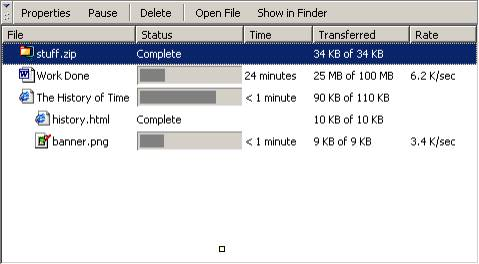

Ben Goodger (07/15/2001)
A download manager provides an unified mechanism for tracking data downloads. The goal is to provide a single management window which tracks download progress for items such as files, software updates (XPInstall), saved web pages, mail attachments and files transferred via AIM. The window allows users to pause and resume any transfer operation, view info about a particular file, and open the transferred file.
There are two major components to such a system:
-
The Download Manager window
Presents to the user a means of observing transfers and manipulating
transferred files.
-
The Download Manager back end
Exposes to clients an API offering the ability to download files, or utilize a
single front end for an existing download back end.
This document will describe each of these systems in detail.
The download manager window would look something like this:

The window is a regular, top level sizeable window with a representation in the Windows taskbar (and corresponding window list on other platforms), its own icon, and a unique ‘windowtype’.
No menu present on Microsoft Windows, the Navigator menu bar is used on MacOS.
A single toolbar is presented. The image above shows the use of text labels although icons would be more appropriate. The entries operate on a selection and include:
- Properties – displays the information window for the selected item (see below).
- Pause/Resume – pauses the selected transfer if a transfer is in progress, resumes the selected transfer if a currently paused transfer is selected.
- Delete – open issue deletes the file selected / deletes the entry in the transfer database. Probably we want the latter as the file could be moved.
- Open File – launches the selected file. We should enable this for executables as well as not providing this functionality is really lame.
- Show in Finder/Explorer – opens the Finder/Explorer folder that contains the file.
This is presented as a multi-columned tree-view. Transfers are listed with name (and corresponding icon), transfer status, time to completion, transfer progress and transfer rate. A comprehensive breakdown follows:
- Transfer Name: this is typically the file name of the file being transferred, e.g. ‘stuff.zip’ but should optionally be something special, which the client can supply when they initiate the download. The transfer name is accompanied by an icon which represents the file type (e.g. .doc, .zip etc), which is possible using the moz-icon protocol handler.
- Transfer Status: this is a progressmeter which gives a graphical indication of the percentage complete of the transfer. When the transfer is complete, the progressmeter is replaced by the text ‘Completed’. Most implementation copied from current download dialog.
- Time: displays time to completion. Implementation copied from current download dialog.
- Transferred: displays the amount of data transferred, and the total amount that must be transferred. Implementation copied from current download dialog.
- Rate: displays the transfer rate. Implementation copied from current download dialog.
The screenshot above shows nested transfers. For details, see “Applications.”
The transfers that appear in the transfer list include the current transfers, and all previous transfers. Users can delete transfers from the list using aforementioned UI. Details relating to transfers from previous sessions is stored in XML RDF in the user profile directory. Information about current transfers is saved when the application is shut down. This is a useful feature as it allows users to locate files they have previously downloaded, even after an application restart. This prevents users from ‘losing’ files.
Since we currently do not allow transfers to be paused across sessions there is an issue regarding shutting down the application while there is a pending paused transfer. The cheap way around the problem is to prompt the user to allow the transfer to complete or lose it. The elegant solution is to allow cross-session pausing.
Internet Explorer 5.0 Mac supports “Reload” functionality – the ability to refetch a file. Should we support this? It probably wouldn’t be hard.
The properties window is an info window (modeless dialog with Close button on Windows, modeless non-resizable Window on Macintosh). It presents the following information:
- A large (32x32) icon for the file type
- The file’s ‘Display’ or ‘Pretty’ name.
- The file’s actual name, if different from above.
- A button to open the file.
- The type of the file
- The remote path from which the file was downloaded
- The local path to which the file was saved
- A button for opening the file’s containing folder
- The status of the download (KB downloaded from KB total)
There are two major preferences that relate to this feature:
- The ability to control the maximum number of simultaneous downloads (subsequent downloads are added to a queue)
- The ability to specify the default location into which downloaded files are placed. The UI for this would also present a button allowing the user to open that folder in Finder or Explorer. (“Show Files…”)
16x16 icons for:
- Information button
- Pause/Resume button
- Delete button
- Open File button
- Open Containing Folder button
Slim-line progress meter for tree view
The API should present a function allowing a client to request a transfer. Immediate transfer is not guaranteed, as there may be a limit to the number of simultaneous transfers.
Example method summary for nsIDownloadManager:
void addItem(in wstring aDisplayName, in wstring aSourcePath, in wstring aDestPath, in wstring aParentID, in nsIWebProgress aProgress);
Parameter break-down:
aDisplayName – The name of the file being transferred. This can be either the file name, some other string, or null. If it is null, the name of the file will be extracted from aSourcePath.
aSourcePath – The full remote path of the file being transferred.
aDestPath – The full local path for the folder that the file is being transferred into.
aParentID – The parent transfer to the requested transfer. In most situations this is either null or “NC:DownloadRoot”.
aProgress – something implementing nsIWebProgress. Most often null. Some applications may wish to handle performing the download themselves (e.g. XPInstall), however providing nsIWebProgress allows the Download Manager front end to display graphical information about the state of the transfer.
Downloads are stored in an RDF datasource. While the application is running the current list of transfers is maintained in an in-memory-datasource, at application shutdown this list is flushed to the user’s profile directory in XML RDF.
Almost all downloads are child RDF Resources of the NC:DownloadRoot container. Downloads have property arcs such as Name, Progress etc that are updated by the Download Manager back end so that the UI keeps up to date with transfer.
The current download code is leveraged as much as possible. This feature is simply wrapping a new API and front end around it.
Several applications are immediately obvious:
- Standard file transfer operations
- XPInstall software downloads
- AIM Buddy file transfer
- Saving web pages.
This section provides a brief proposal for how each application could be implemented using the system.
This simply relies on download functionality provided by the download manager back end to fetch a file. If specified, the existing content-type handling dialog is presented prior to a transfer taking place. The “Name” displayed for the transfer is the name of the file.
For downloads of items such as themes, language packs and browser add-ons, the XPInstall download window could be replaced by use of this integrated download system. The use is similar to that of file transfer operations, except a ‘Pretty’ name is used for the file name, e.g:
[@] Toy Factory theme [ ||||||| ] 245 KB of 562 KB 1 min
(instead of toyfactory.xpi or similar showing).
The ‘Type’ of file when shown in the Properties window would be the type of provider, e.g. ‘Netscape 7.0 Theme’ or ‘Netscape 7.0 Language Pack’
Open Issues: It would be cool to be able to show an icon for the XPI being installed. How?
Again, AIM buddy transfer is similar to standard file transfer operations. The file name of the file being transferred is used as the display name. When displaying the ‘Source’ information in the Properties window, the following format is used:
From: BenG9999 (AIM Buddy)
Or, cooler:
From: BenG9999 (@) ,
Where (@) is an online AIM icon indicator for BenG9999. Clicking either it or the name will launch an instant message window.
AIM File transfer will likely provide its own transfer back end utilizing the AIM protocol, so this is a good candidate for use of the final parameter for addItem, where a third party provides transfer code, but exposes a way to keep a unified FE up to date with transfer progress.
This is the doozy. A common complaint is that our current page saving system is inferior to IE in that we do not save associated data when we save a page. Nor do we expose the same transfer functionality that other downloaded files get (such as Launch File or Show in Finder). When a page save is performed, the following happens:
A root transfer is added to the NC:DownloadRoot using addItem. Added as children of this transfer (where the URI of the root transfer is its source path) are the associated page elements – the .html file, images, etc. Each of these gets its own entry underneath the root ‘folder’. The folder is shown initially collapsed, providing general information, but the user can open it to inspect each element that has been saved with the page.
The ‘Name’ used for the root ‘folder’ is the title of the web page being saved. The name for each sub item is its file name.
That’s it for 1.0. Comments?